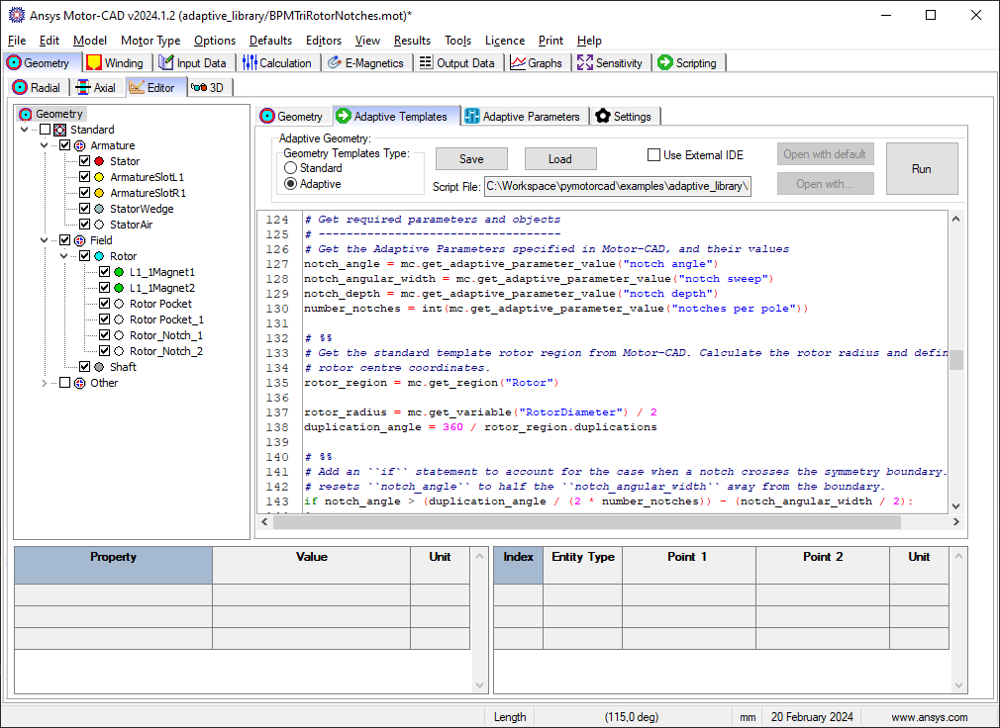

Note
Go to the end to download the full example code.
Curved Rotor Flux Barriers for SYNCREL U-Shape#
This script applies the adaptive templates functionality to alter SYNCREL U-Shape rotor template to use curved rotor pockets.
Note
For more information on the use of Adaptive Templates in Motor-CAD, and how to create, modify and debug Adaptive Templates Scripts, see Motor-CAD adaptive templates scripting in the User guide.
Note
Adaptive Templates in Motor-CAD require v2024.1.2 (Motor-CAD 2024 R1 Update) or later and PyMotorCAD v0.4.1. To update PyMotorCAD in Motor-CAD, go to Scripting -> Settings -> PyMotorCAD updates and select ‘Update to Latest Release’.
Note
This script does not support:
Zero inner/outer layer thickness
Inner/outer posts
This script is designed to be run from Motor-CAD template “i3”. If no Motor-CAD file is open, the i3 template will be loaded.
To set an adaptive geometry for a Motor-CAD file, a script must be loaded in to the Adaptive Templates tab (Geometry -> Editor -> Adaptive Templates) in Motor-CAD and run. When the option ‘Geometry Templates Type’ is set to ‘Adaptive’, this script is automatically run repeatedly to keep the Adaptive Geometry set in Motor-CAD.
This Python script can also be executed externally, but unless the script is loaded in to the Adaptive Templates tab in Motor-CAD, the geometry will only be defined temporarily.
Perform required imports#
Import pymotorcad to access Motor-CAD.
Import Arc, Coordinate, Line, Region and rt_to_xy
to define the adaptive template geometry.
Import os, shutil, sys, and tempfile
to open and save a temporary .mot file if none is open.
import os
import shutil
import sys
import tempfile
import ansys.motorcad.core as pymotorcad
from ansys.motorcad.core.geometry import Arc, Coordinate, Line, rt_to_xy, xy_to_rt
Connect to Motor-CAD#
If this script is loaded into the Adaptive Templates file in Motor-CAD, the current Motor-CAD instance is used.
If the script is run externally, these actions occur: a new Motor-CAD instance is opened,
the i3 SYNC motor template is loaded, and the file is saved to a temporary folder.
To keep a new Motor-CAD instance open after executing the script, use the
MotorCAD(keep_instance_open=True) option when opening the new instance.
Alternatively, use the MotorCAD() method, which closes the Motor-CAD instance after the
script is executed.
if pymotorcad.is_running_in_internal_scripting():
# Use existing Motor-CAD instance if possible
mc = pymotorcad.MotorCAD(open_new_instance=False)
else:
mc = pymotorcad.MotorCAD(keep_instance_open=True)
# Disable popup messages
mc.set_variable("MessageDisplayState", 2)
mc.set_visible(True)
mc.load_template("i3")
# Open relevant file
working_folder = os.path.join(tempfile.gettempdir(), "adaptive_library")
try:
shutil.rmtree(working_folder)
except:
pass
os.mkdir(working_folder)
mot_name = "SYNCRELCurvedFluxBarriers"
mc.save_to_file(working_folder + "/" + mot_name + ".mot")
# Reset geometry to default
mc.reset_adaptive_geometry()
Define functions for the Adaptive Templates script#
This example Adaptive Templates Script works by defining
a number of required functions.
These functions are then called within a for loop,
which executes the script for each rotor duct layer.
Calculate barrier arc centre and radius coordinates#
Define a function to get the radius and centre of a barrier arc.
Parameters:
coordinate_1: Coordinate, Arc start coordinate.coordinate_2: Coordinate, Extra coordinate on arccoordinate_3: Coordinate, Arc end coordinatearc_direction: Integer, Direction to create arc between start/end
Returns:
radius: float, Arc radiuscentre: Coordinate, Arc centre coordinate
def get_barrier_centre_and_radius(coordinate_1, coordinate_2, coordinate_3, arc_direction):
_, start_t = xy_to_rt(coordinate_1.x, coordinate_1.y)
_, end_t = xy_to_rt(coordinate_3.x, coordinate_3.y)
a = (
coordinate_1.x * (coordinate_2.y - coordinate_3.y)
- coordinate_1.y * (coordinate_2.x - coordinate_3.x)
+ coordinate_2.x * coordinate_3.y
- coordinate_3.x * coordinate_2.y
)
b = (
(coordinate_1.x**2 + coordinate_1.y**2) * (coordinate_3.y - coordinate_2.y)
+ (coordinate_2.x**2 + coordinate_2.y**2) * (coordinate_1.y - coordinate_3.y)
+ (coordinate_3.x**2 + coordinate_3.y**2) * (coordinate_2.y - coordinate_1.y)
)
c = (
(coordinate_1.x**2 + coordinate_1.y**2) * (coordinate_2.x - coordinate_3.x)
+ (coordinate_2.x**2 + coordinate_2.y**2) * (coordinate_3.x - coordinate_1.x)
+ (coordinate_3.x**2 + coordinate_3.y**2) * (coordinate_1.x - coordinate_2.x)
)
centre = Coordinate((-b / a) / 2, (-c / a) / 2)
radius = Line(centre, coordinate_1).length * arc_direction
return radius, centre
Whether corner rounding should be applied to pocket#
Define a function to determine whether corner rounding should be applied to pocket.
Returns a boolean.
Returns True if Corner Rounding is selected for the Rotor in the Motor-CAD
file, and if the Corner Rounding radius is set to a non-zero value.
def get_pockets_include_corner_rounding():
return (mc.get_variable("CornerRounding_Rotor") == 1) and (
mc.get_variable("CornerRoundingRadius_Rotor") > 0
)
Create a rotor mirror line#
Define a function to create mirror line through rotor from origin to airgap. Returns a Line. Get the rotor diameter and pole number from the Motor-CAD file. Calculate the airgap coordinates.
def get_rotor_mirror_line():
rotor_radius = mc.get_variable("RotorDiameter")
number_poles = mc.get_variable("Pole_Number")
airgap_centre_x, airgap_centre_y = rt_to_xy(rotor_radius, (360 / number_poles) / 2)
return Line(Coordinate(0, 0), Coordinate(airgap_centre_x, airgap_centre_y))
Get list of coordinates#
Define a function to get a list of coordinates from the pocket using coordinate_indices.
Order of coordinates: start, end, extra coordinate on arc.
Parameters:
pocket: Region, Pocket regioncoordinate_indices: list of integer, Pocket region coordinate indicesmirror_line: Line, Mirror line to generate extra coordinate on arc
Returns
list of Coordinates
Loop through coordinates and add to a list. Mirror the first coordinate to generate the third coordinate on the arc.
def get_coordinates(pocket, coordinate_indices, mirror_line=None):
coordinates = [pocket.points[index] for index in coordinate_indices]
if mirror_line is not None:
coordinates.append(coordinates[0].mirror(mirror_line))
return coordinates
Get list of coordinates for pocket arcs#
Define functions to get a list of coordinates
to use to generate the top and bottom arcs for pocket.
Return coordinates at indices from pocket.points.
These indices match up with coordinates from each pocket region
with/without corner rounding.
Order of coordinates: [start, end, centre, start, end, centre]
Indices have been selected using Motor-CAD geometry editor.
For no centre post:
Parameters:
pocket: Region, Pocket region
Returns
list of Coordinates
def get_coordinates_no_centre_post(pocket):
if get_pockets_include_corner_rounding():
return get_coordinates(pocket, [2, 8, 5, 11, 17, 14])
else:
return get_coordinates(pocket, [1, 5, 3, 6, 0, 8])
For centre post:
Parameters:
pocket: Region, Pocket region
Returns:
list of Coordinates
Mirror required to generate the third point on arc. This third point is required to calculate the centre and radius of arc. The mirror line mirrors the start point of each pocket arc to generate this third point.
def get_coordinates_centre_post(pocket):
mirror = get_rotor_mirror_line()
if get_pockets_include_corner_rounding():
return get_coordinates(pocket, [2, 5], mirror) + get_coordinates(
pocket, [8, 11], mirror_line=mirror
)
else:
return get_coordinates(pocket, [1, 3], mirror) + get_coordinates(
pocket, [4, 0], mirror_line=mirror
)
Update pocket geometry#
Define a function to update the pocket entities
to create a curved pocket using input coordinates.
Parameters:
pocket: Region, Pocket regioncoordinates: list of Coordinate, Coordinates to generate arcs with in region
Create a list of arc entities from the coordinates. Remove the entities between the start and end coordinates of each arc, then insert into the pocket.
def update_pocket_geometry(pocket, coordinates):
entities = []
# create list of arc entities from coordinates
for element in range(0, len(coordinates), 3):
if (element + 1) % 2 == 0:
# clockwise arc
arc_direction = -1
else:
# ant-clockwise arc
arc_direction = 1
# get arc radius and centre point from three coordinates across the arc
radius, centre = get_barrier_centre_and_radius(
coordinates[element], # arc start coordinate
coordinates[element + 1], # arc end coordinate
coordinates[element + 2], # arc third coordinate
arc_direction,
)
entities.append(
Arc(
coordinates[element],
coordinates[element + 1],
centre,
radius,
)
)
# remove entities between start and end coordinates of each arc then insert into pocket
for count, element in enumerate(range(0, len(coordinates), 3)):
start_index = pocket.points.index(coordinates[element])
end_index = pocket.points.index(coordinates[element + 1])
if end_index == 0:
end_index = len(pocket.points)
# use index of start/end coordinates to remove pockets entities between them
for index in reversed(range(start_index, end_index)):
pocket.entities.pop(index)
pocket.insert_entity(start_index, entities[count])
Get unique pocket name#
Define a function to return the unique pocket name used in Motor-CAD.
Parameters:
index: integer, Current pocket index
Returns:
string
def get_pocket_name(index):
if index == 0:
return "Rotor Pocket"
else:
return "Rotor Pocket_" + str(index)
Create the Adaptive Templates geometry#
Get the number of layers in the rotor for the Motor-CAD file
pocket_number = 0
number_layers = mc.get_variable("Magnet_Layers")
For each layer:
Get the U-Shape layer parameters
Raise an exception if the curved barrier can’t be created for a layer due to the thickness being zero
Raise an exception if the curved barrier can’t be created for a layer due to the post width being zero
Get the pocket from Motor-CAD using unique name
Determine whether there are 1 or 2 pockets in the layer and get the new coordinates
Update the rotor pocket geometry with the new coordinates
Set the updated pocket region in Motor-CAD
If there are 2 pockets in the layer, the left pocket region is updated first. This is then mirrored to update the right pocket region.
for layer in range(number_layers):
# get U-Shape layer parameters
outer_thickness = mc.get_array_variable("UShape_Thickness_Outer_Array", layer)
outer_post_width = mc.get_array_variable("UShape_Post_Outer_Array", layer)
inner_thickness = mc.get_array_variable("UShape_Thickness_Inner_Array", layer)
inner_post_width = mc.get_array_variable("UShape_Post_Inner_Array", layer)
centre_post_width = mc.get_array_variable("UShape_CentrePost_Array", layer)
if (inner_thickness == 0) or (outer_thickness == 0):
message_string = (
"Unable to create curved barrier for layer "
+ str(layer)
+ ". No inner/outer thickness."
)
raise Exception(message_string)
elif (outer_post_width > 0) or (inner_post_width > 0):
message_string = (
"Unable to create curved barrier for layer "
+ str(layer)
+ ". Inner/Outer post width > 0"
)
raise Exception(message_string)
# get pocket from Motor-CAD using unique name
pocket_left = mc.get_region(get_pocket_name(pocket_number))
if centre_post_width == 0:
# no centre post, single rotor pocket in layer
new_coordinates = get_coordinates_no_centre_post(pocket_left)
else:
# centre post, two pockets per layer
new_coordinates = get_coordinates_centre_post(pocket_left)
update_pocket_geometry(pocket_left, new_coordinates)
# increment pocket number to get next pocket from Motor-CAD
pocket_number += 1
if pocket_left.is_closed():
# set region back into Motor-CAD
mc.set_region(pocket_left)
if centre_post_width > 0:
# mirror left barrier/pocket region across the rotor using mirror line
pocket_right = pocket_left.mirror(get_rotor_mirror_line(), unique_name=False)
pocket_right.name = get_pocket_name(pocket_number)
# increment pocket number to get next pocket from Motor-CAD
pocket_number += 1
if pocket_right.is_closed():
# set region back into Motor-CAD
mc.set_region(pocket_right)
Load in Adaptive Templates script if required#
When this script is run externally, the script executes the following:
Set Geometry type to Adaptive.
Load the script into the Adaptive Templates tab.
Go to the Geometry -> Radial tab to run the Adaptive Templates script and display the new geometry.
Note
When running in a Jupyter Notebook, you must provide the path for the Adaptive Templates script
(PY file) instead of sys.argv[0] when using the load_adaptive_script() method.
if not pymotorcad.is_running_in_internal_scripting():
mc.set_variable("GeometryTemplateType", 1)
mc.load_adaptive_script(sys.argv[0])
mc.display_screen("Geometry;Radial")
Total running time of the script: (0 minutes 29.813 seconds)